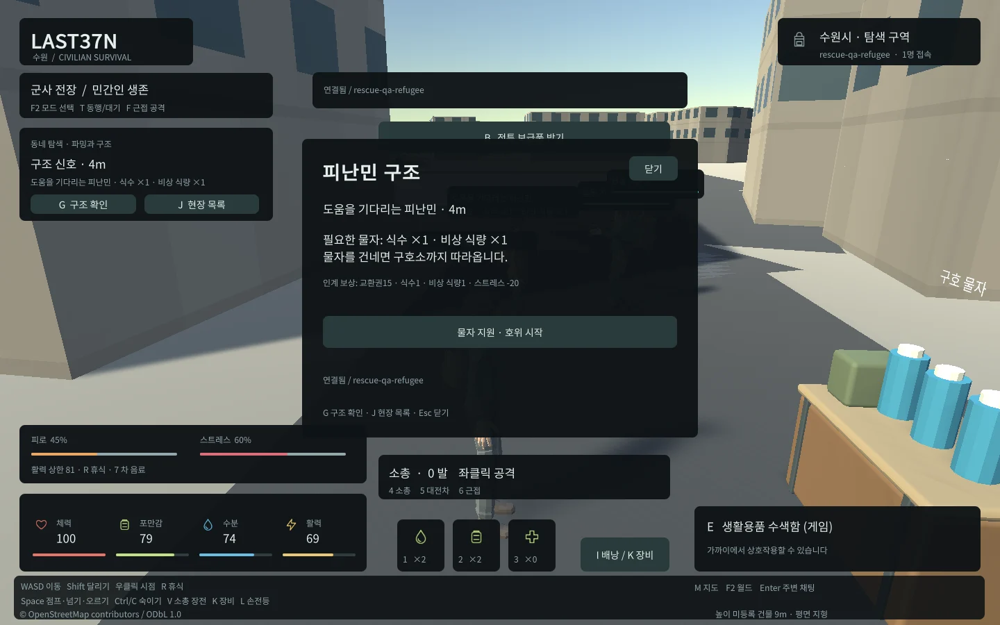
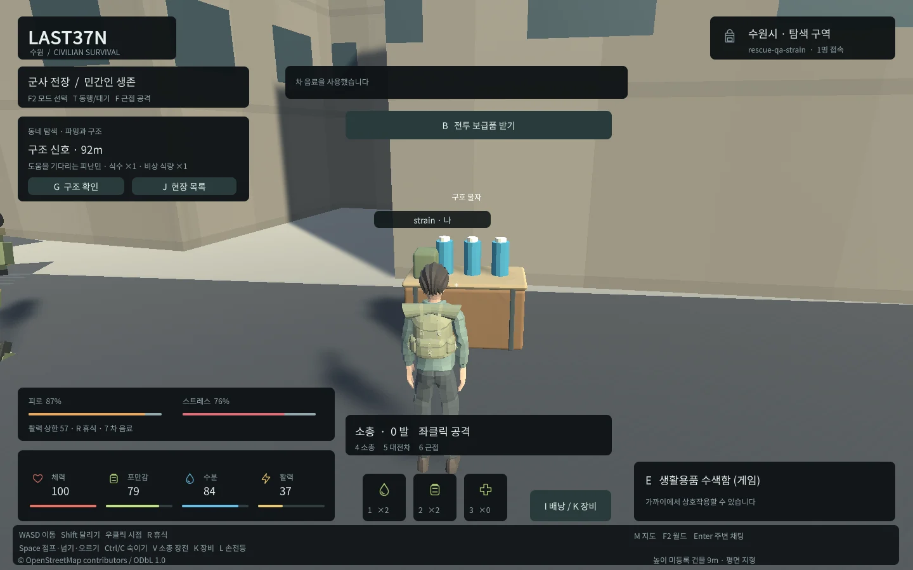
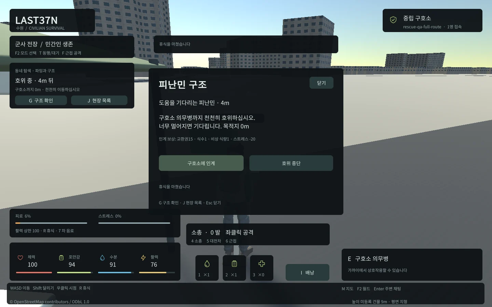
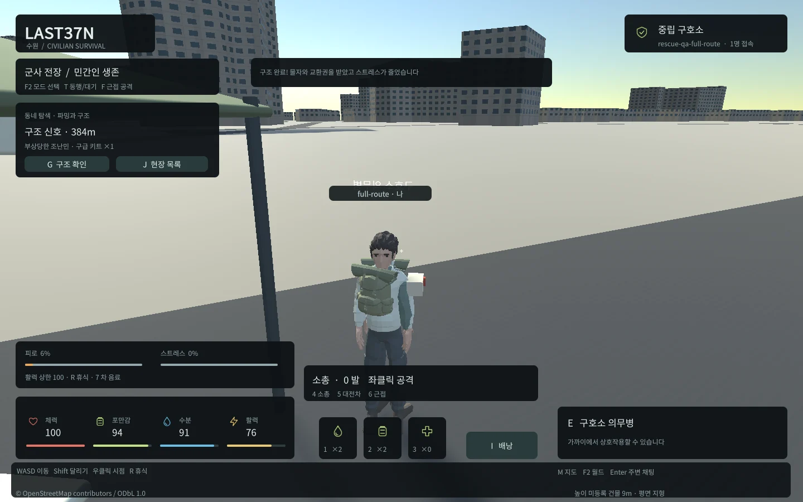
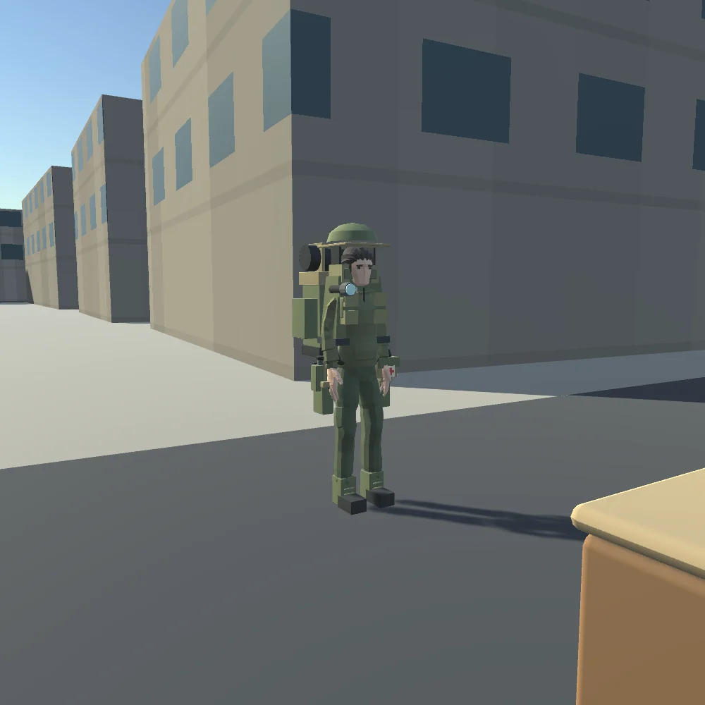
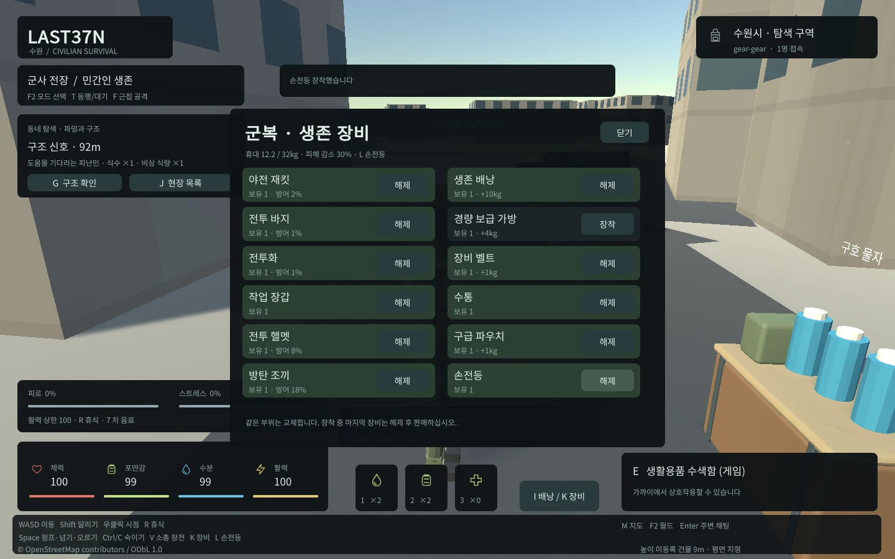
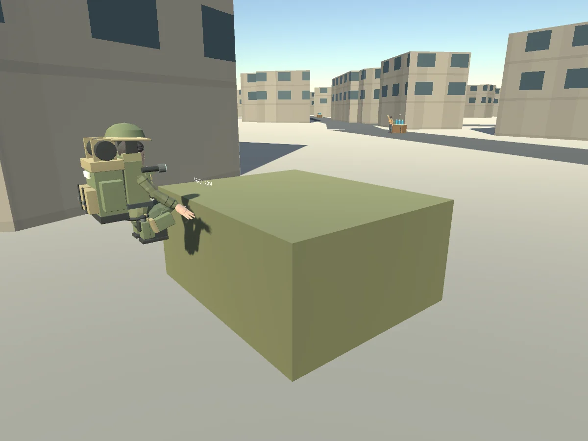
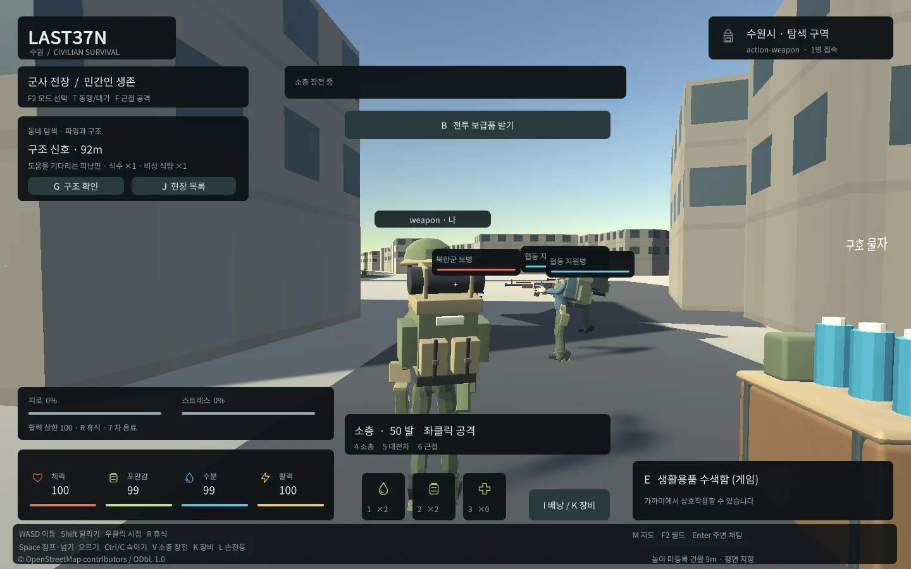

Tracefolio REPORTS & ISSUES
Tracefolio REPORTS & ISSUES수원 TPS 생존 확장 · 구조·채팅·장비12종·행동10종
완료동네 파밍·선택 구조·피로/스트레스·한국어 이름/말풍선, 필수 군복/생존 장비12종, 점프·숙이기·넘기·오르기와 무기 행동10클립을 실제 게임에 연결했습니다.
작업 결과
기본 localhost8788에 적용하고 서버/DB·Windows·실제 Web 입력과 기존 회귀를 검증했습니다.
변경 내용
적용 내용
주요 활동을 동네를 돌아다니며 물자를 모으는 흐름으로 보강했습니다. 시작85~600m의 실제 도로 주변18개 수색 지점에 식수·식량·의료품·차 음료를 분산했습니다. 구조는 강제 퀘스트가 아닌 선택 활동입니다.
G로 피난민에게 식수/식량, 조난민에게 구급 키트를 건네고 구호소 의무병까지 천천히 호위합니다. 인계하면 교환권15·식수1·식량1과 스트레스20 완화를 받습니다. 서버가 소유권·물자·거리/건물 사선·NPC 경로·보상/중복을 검사합니다. 배낭 공간이 부족하면 정리 후 인계할 수 있습니다. 월드당3개 이벤트가 만료/교체되며 비접속60초 뒤 호위가 풀립니다.

허기0.8/분·갈증1.2/분, 걷기/달리기/정지 피로와 적 근처/피격 스트레스를 적용했습니다. 휴식·안전한 구호소·차 음료·구조 완료로 완화합니다. 높은 피로/스트레스는 활력 상한과 달리기에 영향을 줍니다. 비접속 생존 감소는 기본 비활성을 유지합니다. 모든 수치는 provisional 설정입니다.

Enter로 주변 채팅, 머리 위 이름표와6초 말풍선, F2의 한국어 새 캐릭터 이름 입력을 추가했습니다. 이름/발신자 ID는 서버 값이며 같은 월드/주변 범위에서 전달합니다. Unity6.0 Web 기본 입력에서 한국어가 ?만 전송되는 실패를 확인한 뒤 브라우저 HTML 입력과 키보드 포커스/조합 Enter를 연결했습니다.

 
필수 장비12종은 야전 재킷·전투 바지·전투화·작업 장갑·헬멧·방탄 조끼·생존 배낭·경량 보급 가방·벨트·수통·구급 파우치·손전등입니다. 같은 부위는 교체하며 기존 스킨 군복/조끼와 신규11 FBX를 재사용합니다. Blender 편집 원본을 보존하고 텍스처 없는 경량 소품/공유 재질로 구성했습니다. K 장비 창·I 배낭, L 장착 손전등입니다.
 
Space 점프·근처 방벽 넘기/발판 오르기, Ctrl/C 숙이기, V 소총 장전입니다. R 휴식·4/5/6 무기·좌클릭/F 공격·1/2/3/7 물품 사용은 유지합니다. 서버가 행동 시간·활력·높이·경로/착지·접근 거리를 결정하고 클라이언트가 보간합니다. 점프/착지·숙인 대기/걷기·넘기/오르기·소총/발사기 사격·장전·근접·소비10클립을 같은 Generic 리그에 제작했습니다. 상체 무기 레이어와 전신 이동 레이어를 분리하고 무기 그립/수납·재접속/원격 동기화를 연결했습니다.


검증
실제 서버82개 실패0/건너뜀0. 실제 PostgreSQL 구조 동시 중복1회·인계 기록 실패의 물자/보상/상태 롤백·재시작 후 피로/스트레스/구조 상태/영수증 복원·월드 격리를 확인했습니다. 실제 WebSocket은 발신자 이름 위조·중복 방송·거리/월드 격리를 검사했습니다.
실제 Web 20개: 파밍·피난민 물자/재접속/호위/인계·조난민 의료/중단·주기 생존/휴식/차·한글 양방향 대화·이름표/말풍선/만료·조합 Enter·새 이름 입력·모델3·엔진 오류0. 기존 Web 전투14개, 기존 생존 UI3개, Windows 전투4종/생존5종도 실행했습니다. Native/Web 회귀 fixture 공유로 수색 쿨다운이 남아 실패한 검사도 보존하고 새 스키마로 재실행했습니다.
웹 초기4개 파일11,020,608bytes로12MiB 예산을 통과했습니다.100개 실제 PostgreSQL/WebSocket 약92초, 이동80·재접속10·9900명령, 응답 p95 66.98ms·오류0입니다. 이는100개 Unity 렌더링이나 인터넷 운영 용량 검증을 뜻하지 않습니다.
공식 Unity6.0 입력/포커스 문서: https://docs.unity.com/en-us/engine/6000.0/manual/platform-specific/webgl/develop/input .6000.0 Web IME 제한: https://issuetracker-mig.prd.it.unity3d.com/issues/ime-languages-are-not-recognized-when-entering-input-in-mobile-and-webgl-builds . 실제 OS/모바일 IME 전체 조합을 검증했다고 확대하지 않습니다.
실제 캡처를 WebP로 압축하고 바이트/해상도·가독성을 확인합니다. 교훈 검토: 실행 근거·실패 보존·버전별 공식 문서·독립 QA 등 기존 전역 지침과 중복되어 전역 추가/변경 없음입니다. 프로젝트 상세는 docs/RESCUE_SURVIVAL.md에 남겼습니다. 사용자 화면/마우스/키보드를 제어하지 않았습니다.
실제 전체 경로 625.0m, 406초, 이동 명령2729개·휴식1회, 인계 시 NPC 거리4.35m·오류0. 순간이동/시간 가속/목적지 변경 없이 진행했습니다. 기본 localhost8788에서도 최신 모드/도시/18개 장소/피로/스트레스·입력창과 엔진 오류0을 확인했습니다.
최신 장비 웹9개·행동 웹14개·기존 구조/채팅 웹20개·기존 전투 웹14개와 수색/거래/치료3개, Native 전투4종/생존5종·장비/클립 실제 렌더가 통과했습니다. 클립10개 모두 실제 본 변화, 숙인 머리0.419m 감소·발높이0.041m, 양방향 traverse 시선 일치1.0을 확인했습니다. 기본8788에서 새 월드의 구조3·장비12·구조물2·한글 이름/채팅·점프/숙이기·DPR2의1440x900·엔진 오류0도 확인했습니다.
현재100접속 측정의 원시 WebSocket 전송 합계는3,994,130,059bytes입니다. 반복 스냅샷 전송량은 운영 전 개선할 과제이며 초기 다운로드 예산 통과를 네트워크 운영 비용이나100명 렌더링 성능 검증으로 확대하지 않습니다.
실패 보존: 애니메이션 FBX 부모 경로 차이·빈 중첩 JSON 런타임 예외는 수정/재검증했습니다. 최종100접속 첫 시도의 가득 찬 상점 재고 판매 거부는 유효한 게임 규칙이므로 중간 재고로 격리 QA 조건을 고쳤습니다. 기존 월드의 이벤트 교체 대기 중0개는 설정대로이며 새 월드에서3개 생성과 전체 이벤트 주기를 별도 검사했습니다.
남은 사항
저사양/모바일·100명 동시 Unity 렌더링·모든 OS IME 조합은 미확인입니다. 구조 NPC는 이번 단계에서 적의 공격 대상이 아니며 복잡한 전술 AI/장거리 동적 경로 탐색을 구현한 것은 아닙니다. 실제 인터넷 운영의 전송량/인증/TLS 최적화는 별도 과제입니다. 모든 OSM 건물 자유 등반·낮은 통로/은신 판정·추락 피해·수통 정수/충전·장비 내구도는 미구현입니다. 현재 경량 소품/공용 리그를 사용하는 프로토타입이며 모든 장비 조합의 관통·동적 손 접촉 IK까지 검증한 것은 아닙니다.
작업 시간
- 제안 시간: 최초60
100분, 장비 추가3560분, 이동/무기 애니메이션 추가4070분. 사용자 추가 범위 포함 전체 약150230분. 시작2026-10-31 01:35:00 KST. - 실제로 완료된 시간: 기록 2026-10-31 03:54:15 KST. 시작 후 139분 15초. 외부 보고/메뉴얼 배포 완료 시각은 전달 기록에 별도 표기합니다.
- XERJ: 미사용 — XERJ 도구 미제공, rg·현재 소스·실제 서버/DB/Unity/헤드리스 브라우저로 검증했습니다.